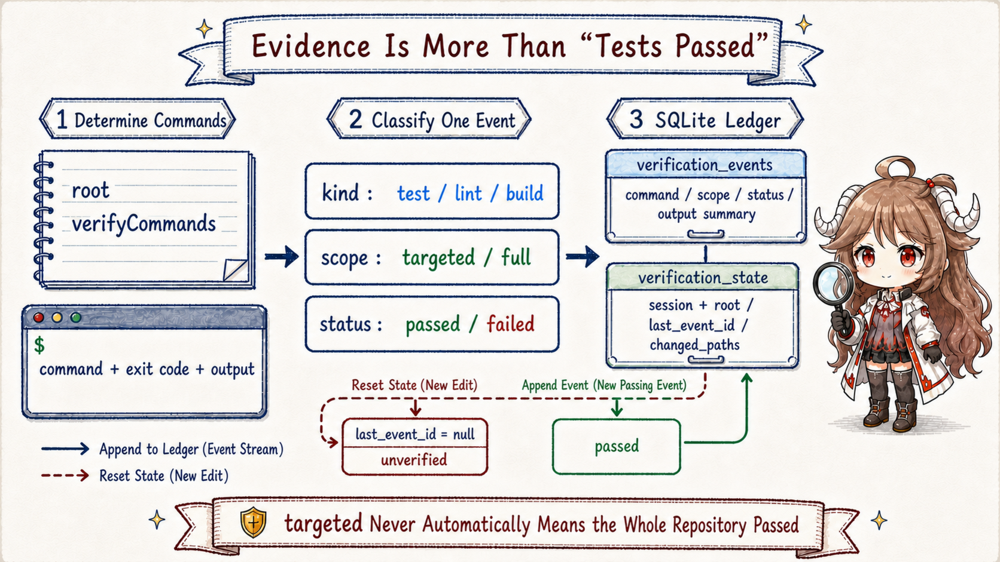
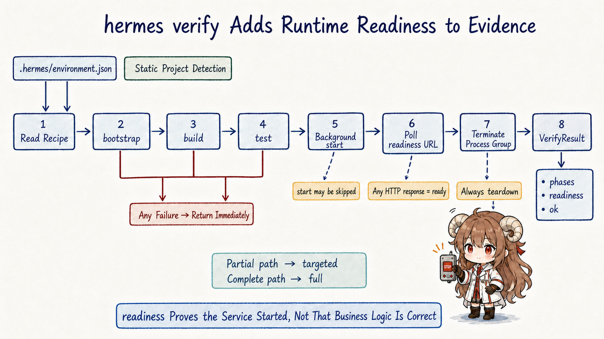
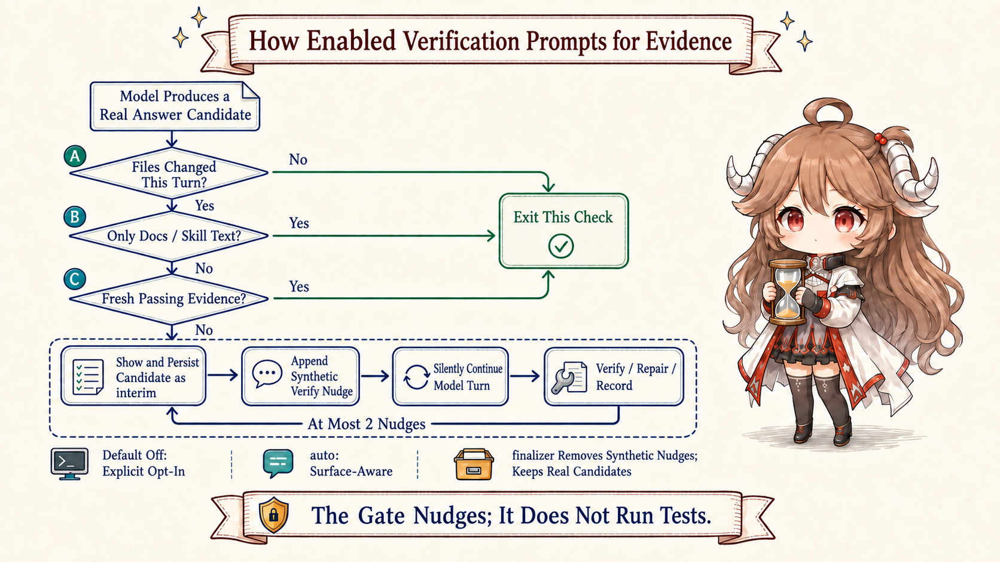

1. Why “I ran the tests” still does not mean “ready to deliver”
The previous two chapters followed one example. The generated-code-testing Skill used to tell the Agent to regenerate code after a schema change.
An offline candidate added one missing action: inspect the generated diff. A human adopts the revised Skill. On the next real task, that Skill guides the Agent to edit generated-code checking logic in the
target application repository, not Hermes core. Every project root, command, and evidence row below belongs to that target repository.
This is the moment when an apparently natural sentence appears: “The fix is done and the tests pass.”
That sentence omits every fact that determines whether it is trustworthy. Was one targeted test run, or the full repository suite? Did the run happen before or after the last edit? Did it prove only a Python function, or did the application build and start? Was the command an accepted project entry point? Without those answers, “tests passed” is narrative, not delivery evidence.
Think of verification evidence as a receipt with a time and a scope. It states which command ran in which workspace, what scope it covered, what exit status and output it produced, and whether the run happened after the newest change. Delivery becomes credible only when this order holds:
change code
-> invalidate old evidence
-> find a project-approved verification entry point
-> execute it and record scope plus result
-> obtain a fresh pass after the latest edit
-> only then claim “verified”Carry four questions through this chapter. How does Hermes know what to run? How does it distinguish one-file evidence from repository-wide evidence? What happens when the model tries to finish without a fresh pass? And why are local verification, offline improvement, and human delivery still three separate decisions?
2. Before execution: how Hermes learns what this project expects
Suppose the Agent just changed generated-code checking logic. The simplest strategy is to guess from the ecosystem: try pytest for Python or npm test for Node.
That sometimes works in a small repository, but real projects often wrap tests, require a particular directory, or separate lint, type checking, build, and runtime checks.
Hermes therefore begins by collecting stable project facts, not by firing a guessed command.
2.1 Project facts are a run sheet, not another project configuration
detect_project_facts() reads signals the repository already owns: manifests, package managers, scripts/run_tests.sh, test/check/lint/build/typecheck scripts in
package.json, pytest configuration, and Makefile targets. It places accepted entries in ProjectFacts.verify_commands.
The same facts can be rendered into model context and returned structurally to the evidence classifier.
@dataclass
class ProjectFacts:
manifests: list[str]
package_managers: list[str]
verify_commands: list[str]
context_files: list[str]
ProjectFacts itself does not store the root. Its caller, project_facts_for(), first resolves a git or marker root and then returns that root beside the four fact groups.
Hermes is not inventing a new project standard here. It is respecting the repository's existing base entry points. In our example, project facts may discover only pytest.
The Agent appends tests/generated_code at execution time, and only then does the classifier label that run targeted. A base entry point plus target arguments becomes one concrete check. See
ProjectFacts, detection, and structured output.
2.2 One code change passes through five ordinary moments
Ignore the internal type names for a moment. An ordinary delivery passes through the following five moments. The verification record, verification recipe, and turn-end check prevent different steps in this sequence from being skipped.
| Moment | What happened | Strongest honest claim |
|---|---|---|
| 1. Before edit | A previous full run passed | The old version passed; the new one is not covered |
| 2. After edit | Files were written and old evidence detached | The implementation changed and is now unverified |
| 3. Fast check | The targeted generated-code test passed | The targeted scope passes, not automatically the repository |
| 4. Complete check | The full suite or recipe passed | This workspace passed within the recorded scope |
| 5. Delivery decision | A human reviews the diff, evidence, risk, and policy | The change may be adopted, merged, or released |
This separates two responsibilities early: a verification command cannot make a release decision, and a review opinion cannot substitute for execution. When turn-end verification is enabled, Hermes also stores moments two through four as queryable local evidence.
3. The verification record stores a concrete check, not a sentence
Hermes keeps an opt-in passive verification record. Terminal tools or hermes verify submit completed results; the module classifies, stores, and queries them without executing commands. _ledger_enabled() shares the turn-end verification switch. When disabled, it neither creates nor reads or writes the evidence database, and status queries return disabled. The hermes verify command can still execute and return its result. See the ledger switch and recording entry points.

3.1 One event must carry command, scope, and result together
VerificationEvidence stores more than an exit code. It includes the original and canonical command, verification kind, scope, status, working directory,
project root, session, and an output summary. Only then can the same exit_code = 0 mean “this particular check passed in this particular scope.”
The following shape omits decorators and defaults to show the record’s essential fields.
class VerificationEvidence:
command: str
canonical_command: str
kind: str # test / lint / typecheck / build / ...
scope: str # targeted / full
status: str # passed / failed
exit_code: int
cwd: str
root: str
session_id: str
output_summary: str
The classifier first compares a command with canonical entries in project facts. It then examines trailing file, directory, or test-selection arguments to determine scope.
pytest -q tests/generated_code/test_diff.py becomes targeted; the project's complete pytest -q may become full.
The implementation is in
command kind, scope, and temporary-script rules
and
terminal and verify recording entry points.
targeted is not weak evidence.
It is often the right fast diagnostic and may support a narrow claim. It simply cannot promote itself into “repo green.” Scope labels keep a conclusion honest without forcing every iteration to start with the slowest command.
The exit code must also be attributable to the verification command itself. Success from pytest || true, pytest | tee result.log, or pytest; echo done does not establish that pytest passed, so the classifier rejects those wrappers as passing evidence. A successful && chain can establish success for its members; a failed chain cannot identify the failing member. These are shell-status attribution rules, not additional test execution.
3.2 Why events and current state live in separate tables
SQLite table verification_events is append-only history: each check retains its command, scope, status, and summary.
verification_state is keyed by session_id + root and stores a current event pointer, last edit time, and changed paths.
The first supports auditing; the second quickly answers, “does this session have usable evidence for this repository now?”
When a tool writes code, mark_workspace_edited() does not invent a failing test. It clears state.last_event_id and records the edit.
The normal current edit path therefore reports unverified: the new version has not failed, but it has not proved itself yet.
verification_status() also contains a stale branch for event/edit ordering, but it would be inaccurate to claim that every edit currently produces that label.
See
event insertion, edit invalidation, and status queries.
old full pass remains in events for audit
+ latest edit
-> state.last_event_id = null
-> current status: unverified
+ new targeted pass
-> current status: passed, scope remains targeted
+ complete canonical run passes
-> current status: passed, scope becomes fullRetention is intentionally bounded: events default to 30 days, 100 entries per session and root, plus a cap on unreferenced rows. This is operational evidence for local delivery, not an unlimited compliance archive.
4. hermes verify: executing the test, build, and start phases a Recipe declares
A targeted test can prove a function satisfies its assertions while the application still fails to build, boot, or bind a port.
A web repository may be green at the unit layer but broken by packaging, environment, or start-command changes.
hermes verify organizes these checks into a repeatable recipe.
4.1 A Recipe turns environment knowledge into ordered phases
A Recipe can contain bootstrap, build, test, start, port, readiness URL, and evidence notes.
Hermes first loads a saved .hermes/environment.json; otherwise it statically detects Node, Python, Go, Rust, Java, Make, Docker, and related project shapes.
That detection is cheap because it reads only a few project files; a discovered pytest command or wrapper script may still be expensive to run.
The CLI also merges canonical commands from project facts into a detected recipe, so learning how to start the app does not hide its own lint or test entry points.

from pathlib import Path
from agent.verify import load_or_detect, run_verify
root = Path.cwd()
recipe, source = load_or_detect(root)
if recipe is None:
raise RuntimeError("No verification recipe")
result = run_verify(root, recipe, phases=("test",), skip_start=True)
print(result.to_dict())
The runner executes selected, declared bootstrap, build, and test phases in order, stopping on failure by default. Startup runs only when preceding phases pass, start is selected, skip_start is false, and the recipe declares a start command; readiness polling is followed by process-group cleanup. A Compose preflight now refuses build or start if docker compose ps reports running project containers, avoiding replacement of container-local state. A preflight timeout or nonzero exit also refuses execution. Only a missing Docker executable skips this guard; later phases may still fail. It is not a complete isolation guarantee. See Compose preflight and phase execution and the Recipe fields.
4.2 Readiness proves the polled address answered, not that business logic is correct
Hermes currently treats any HTTP response as ready, including 4xx and 5xx. This proves that the configured URL returned an HTTP response during polling, but not strictly that the response came from the process Hermes just launched; an existing service on that port could also satisfy the check. It does not prove login, code generation, or data writes. Those behaviors still require targeted tests or a real smoke check.
Likewise, hermes verify --phase test and --skip-start are useful fast paths, when recording is enabled, their evidence is downgraded to targeted.
Without either partial option, the run is recorded as full. Here full means “all phases this Recipe actually declares.” If the Recipe contains test but no start, full does not invent a boot check.
The CLI and scope logic are visible in
run_verify_command and _record_evidence.
5. Who checks freshness when the model tries to finish
Project facts tell the model what to run, the verification record preserves what actually ran, and hermes verify adds runtime coverage.
The model can still edit a file and immediately draft a final answer without invoking any of them. A prompt that says “remember to test” is behavioral guidance; it cannot prevent the model from finishing.
Hermes provides an optional verify-on-stop policy. Only when explicitly enabled does it check observed edits and current evidence at a real answer candidate. If verification is needed and the nudge budget remains, it saves the candidate and continues the model. It does not run tests or guarantee that the eventual exit has passing evidence.

5.1 What exactly is a nudge?
In this source, a nudge is a lightweight runtime prompt. It is not a new user request, and it does not secretly run a test.
It is a synthetic user message saying, in effect: “Code changed, but no fresh evidence exists. Run relevant verification, repair failures, or explain the blocker; do not claim this work is verified.”
build_verify_on_stop_nudge() prefers canonical commands from project facts. If a runnable Recipe exists, it suggests hermes verify --json.
Only when neither exists may it recommend a specially prefixed temporary verification script. This ordering prevents the model from obtaining a passed state with an irrelevant true or an arbitrary command.
See
recipe eligibility and nudge construction.
The current turn-end check considers time, not scope.
As soon as the current status is passed, even for fresh targeted evidence, the turn may finish; Hermes does not require a full run.
The final answer must therefore state scope, and reviewers must not read “the turn was allowed to finish” as “the whole repository is green.”
5.2 Why docs skip the check and code gets at most two reminders
Documentation, ordinary text, README, and Skill prose paths do not trigger a nudge. The switch resolves HERMES_VERIFY_ON_STOP first, then agent.verify_on_stop, and defaults to false. Only the configuration value agent.verify_on_stop: auto restores the old surface-aware behavior: on for local coding and direct programmatic callers, off for messaging. true explicitly enables it. The environment variable does not interpret auto: HERMES_VERIFY_ON_STOP=auto enables the check because only 0/false/no/off disable it. Configuration auto is not the installation default. See path filtering and switch resolution.
The continuation is capped at two attempts. Without a bound, missing dependencies, broken tests, or an unfixable model could loop forever between finish and reminder. Reaching the cap does not make verification pass. It only guarantees that control flow can terminate; the answer must still report failure or a blocker honestly.
The observed edit set also has a current implementation limit. turn_stop_gates passes _turn_file_mutation_paths, and Hermes currently adds paths only for landed
write_file and patch tool results. Files changed through a terminal command or an external program do not automatically enter that set;
if no project facts can be resolved from the observed paths, no nudge is produced. The check therefore covers edits observed through those tools, not every filesystem mutation on the operating system.
See the
turn-end check entry
and
FILE_MUTATING_TOOL_NAMES.
The checks run in the order verify-on-stop → pre_verify → kanban, returning immediately when one requests continuation. The first checks evidence; the second requires a registered plugin hook and observed file edits, with its own nudge counter; the third checks whether a board Worker called a terminal tool. Disabling verify-on-stop does not disable these independent mechanisms. The two-nudge bound in this chapter is not a global bound across all continuation paths. See check ordering and return conditions.
5.3 Why the real answer candidate is shown and persisted first
By the time the turn-end check intervenes, the model has already produced real answer content. Hermes keeps it: the candidate is emitted as interim and persisted,
then a synthetic message marked _verification_stop_synthetic is appended before the model loop continues silently.
A successful continuation produces a revised final answer. If the continuation consumes the remaining budget, the runtime can recover the real candidate instead of ending on an internal reminder.
The handoff is implemented in the extracted turn-end check module. It explains why a user may see an interim answer followed by a verified update: this is one delivery continuing after a verification check, not a second user turn.
6. Durable history must still look like a real conversation
The synthetic nudge is useful runtime scaffolding, but it is not a real user message. Persisting it forever would make resumed models believe that the user explicitly requested verification, and could leave the visible transcript ending on an internal command instead of an assistant answer.
turn_finalizer removes marked synthetic nudges before durable persistence while retaining real assistant candidates.
If verification continuation exhausts the remaining budget, it uses the pending real candidate as a fallback. If the model later produces an updated answer, it becomes the turn’s final response while the old candidate remains in history.
The core behavior is in
scaffolding removal and budget fallback
and
final persistence cleanup.
user-visible, resumable history:
user task
assistant candidate / tool work
assistant final response: verified scope or blocker
runtime-only scaffolding:
synthetic verify nudge
verification continuation flagsThe invariant is conversational truth. A turn-end check may make the model continue, but it must not invent user intent. A failed verification may change the conclusion, but it must not erase the real work that preceded it.
7. Local pass, offline improvement, and human adoption answer three different questions
Put the previous chapter's offline evolution beside this chapter's local verification. Both use evidence, but they answer different questions. Local verification asks whether the latest code in this workspace passes declared checks. Offline evaluation asks whether a Skill candidate improves over a frozen baseline across representative tasks. Human adoption asks whether the organization accepts the diff, risks, cost, and release policy.
To keep this chapter self-contained, translate the dataset names once more: training tasks expose failures and provide rewrite signals; validation tasks help the search choose candidates; holdout tasks stay sealed until the final independent comparison; and the frozen baseline is the old Skill that remains unchanged throughout the experiment. Reusing one split for all three jobs lets the optimizer memorize its measuring stick.
| Stage | Input | What it proves | What it cannot replace |
|---|---|---|---|
| Local verification | Current code, canonical command, exit status, output | The latest workspace passes within recorded scope | General improvement across tasks or release judgment |
| Offline evaluation | Frozen baseline, candidate, train / validation / holdout | The candidate is more reliable on a controlled task set | The current integration builds and starts |
| Human adoption | Diff, both evidence types, cost, risk, policy | Whether to merge, enable, release, or roll back | Actual execution or a fair comparison |
7.1 Replay the generated-code example end to end
- A runtime task exposes the missing “inspect generated diff” behavior. The experience enters a candidate area instead of rewriting the active Skill mid-turn.
- An offline run produces candidates on train, navigates with validation, and compares the frozen baseline on holdout. A human adopts the new instruction.
- On a later application task, the new Skill guides the Agent to change generated-code checking in the target repository. With evidence recording enabled, edits landed through
write_fileorpatchinvalidate old local evidence. - Project facts expose canonical base entries such as pytest. The Agent adds target arguments for fast diagnosis, then runs the complete entry or
hermes verify. - When enabled, the verification record stores command, scope, status, and output. Without a fresh pass, verify-on-stop continues within its two-nudge budget; otherwise the turn exits and must state the limitation honestly.
- The final answer states the verified scope honestly. A human then combines offline results, source diff, local evidence, and risk into the merge or release decision.
No single green mark proves everything. passed + targeted is not repository-wide evidence; readiness is not business correctness; holdout improvement is not proof that integration boots;
and human approval cannot retroactively prove that tests ran. Trustworthy delivery comes from connecting these signals without overstating what each one proves.
8. Conclusion: match the delivery claim to the evidence
“The fix is done and the tests pass” becomes meaningful only when command, scope, result, workspace, and time are traceable. Hermes does not pretend one universal test can settle every engineering question. Its optional record and bounded nudges help preserve the sequence: edit, invalidate, rerun, then report honestly. The default-off switch, exhausted nudges, and unobserved edits prevent it from being a hard delivery guarantee.
ProjectFacts names project-approved entry points;
VerificationEvidence records a concrete check when enabled;
hermes verify executes Recipe phases, including build, startup, and readiness when declared;
verify-on-stop explicitly opts into at most two evidence nudges;
turn_finalizer removes internal scaffolding and preserves real conversation;
humans combine local verification, offline evaluation, and risk into delivery.The seven chapters now complete Hermes Agent's two clocks. The runtime clock handles turns, tools, memory, Skills, and background curation. The offline clock turns experience into comparable candidates. The turn-end verification asks one final plain question before either clock's output reaches a person: did the evidence happen after the latest change you are claiming is better?
Source references
- NousResearch/hermes-agent pinned source snapshot
- Project fact detection, rendering, and structured output
- Passive verification records, event table, and state table
- Command classification and evidence recording
- Edit invalidation and current-status query
hermes verifycommand and evidence scope- Verification Recipe ownership and fields
- Phase execution, readiness, and process-group teardown
- Turn-end verification policy, entry-point defaults, and nudge
- The final-answer candidate handoff at genuine turn end
- The tool set currently recognized as landed file mutations
- Synthetic scaffolding cleanup and budget fallback
- Final response persistence cleanup